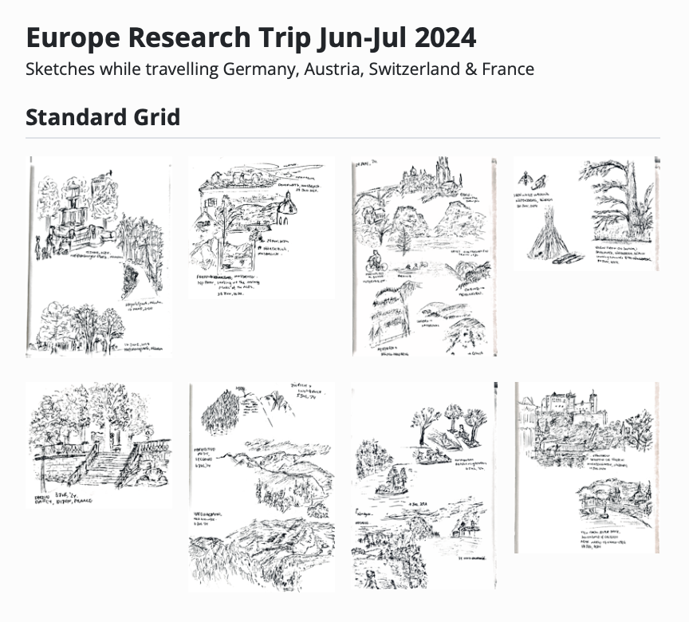
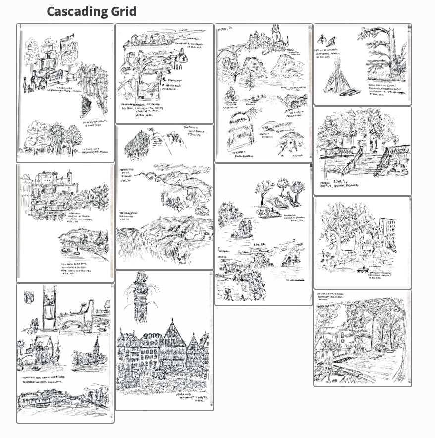
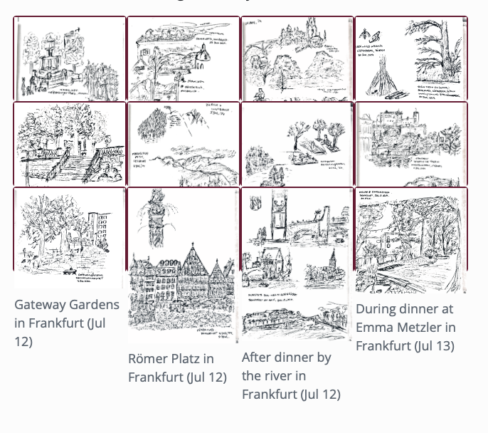
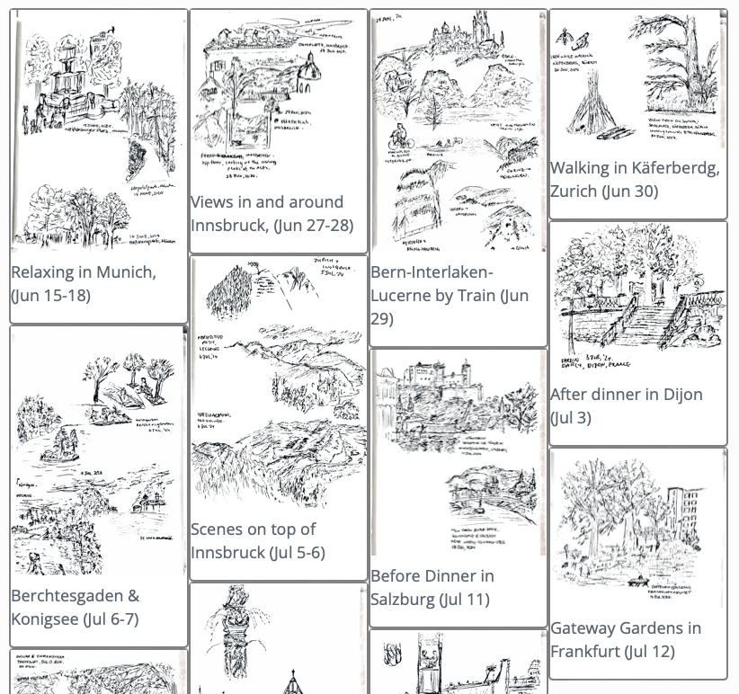
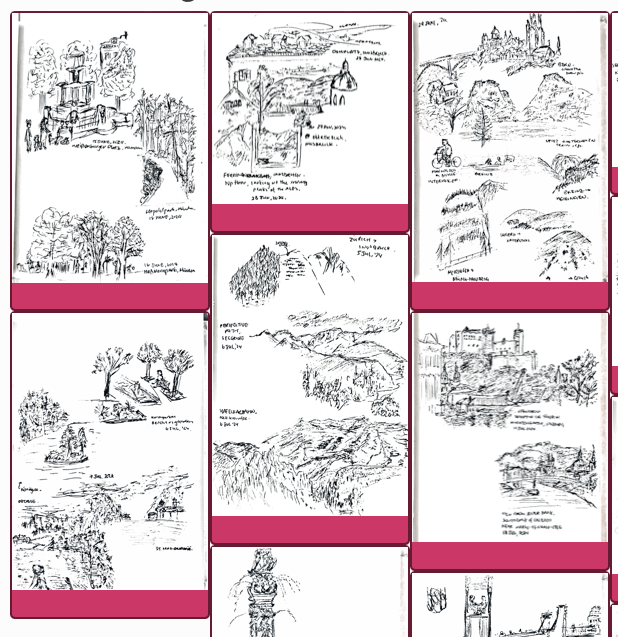

Creating a Pinterest-style image gallery with Quarto
How I used masonry.js via Quarto extensions to create a cascading grid layout for a set of images without any Javascript skills.
how-to
images
quarto
Author
Omer Tzuk
Published
July 23, 2024
Modified
April 14, 2026
Standard vs. Cascading Grid Layouts
I am a sucker for aesthetics and visual flow. In contests between function and form, I definitely lean towards form, though (hopefully) usually not at the expense of function. The upshot of this is that when I decided to share some sketches I made during my recent travels in Europe, I could not bring myself to just post them in a standard grid layout. It just didn’t look right. But lucky for the stubborn stylist in me, with a bit of Quarto extension magic, I managed to make a cascading layout instead.


See here for the actual gallery, complete with lightbox treatment for each of the images!1
Bridging my Taste > Skill mismatch with Quarto Extensions
With my very rudimentary front-end web development knowledge, I knew implementing the layout I wanted would involve some combination of HTML, CSS, Javascript type things. At first I didn’t even know what the layout was called, but a quick conversation in GitHub CoPilot about “Pinterest style image galleries” lead me to “Cascading Grid Layouts” and the masonry.js library.
Still, there was no way I was using said library with my beginner level web skills. Fortunately, @mcanouil has created an Quarto extension filter for using masonry.js in .qmd documents. The repo says it’s experimental, but it was the best option on offer for me. So, I went ahead and added the extension to my Quarto project:
quarto add mcanouil/quarto-masonry
Now all that was left was to look at the example.qmd, pull across the relevant divs and styles, and then tweak until I was satisified / got too hungry and had to go get tacos for dinner.
To use the installed extension, I needed to add the following to my Quarto document:
YAML option to use the extension via filters:
Additional CSS to define and select grid items via include-in-header:
Divs with the relevant grid item class containing the images we want to tile using ::: div fences.
Here is a a very simple document based on the example in mcanouil/quarto-masonry:
Getting everything working using the example was pretty easy, but I had to go through a few iterations of modifying CSS styles and inspecting the rendered page to:
change the tile size from fixed to flexible
change the tile background colour
hide the figure captions from the tiles, but retain the text for alt-text, hover-over and lightbox descriptions
remove the space between the bottom of the images and the bottom edge of the tiles
Screenshots of the tweaks

Fixed tile size and pink background

Flexibly sized white tiles, but ugly figure captions

No figure captions, but hanging margin underneath images in tiles
Here is an annotated version of the CSS I ended up using:
Not speficying height means the tiles expand with the image size
2
Controls the color of tile background
3
Controls display of text in <figcaption> element without affecting other attributes like alt-text
4
Modifies the margins of the .quarto-figure class add by Quarto when rendering inline image references
Bonus Automation with {glue}
I wrote in a previous blog post about using {glue} to generate layouts for collections of images programmatically. I adapted the idea to generate the grid items for the cascading layout instead of typing out each div and inline image reference by hand. Here’s a reference code snippet, in case you want to do the same. The double braces {{}} are used to escape the special characters {}.